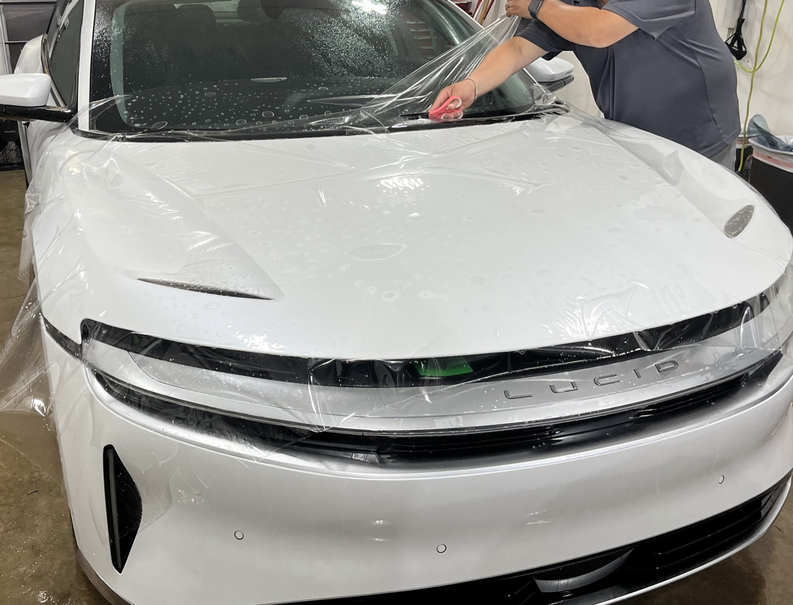
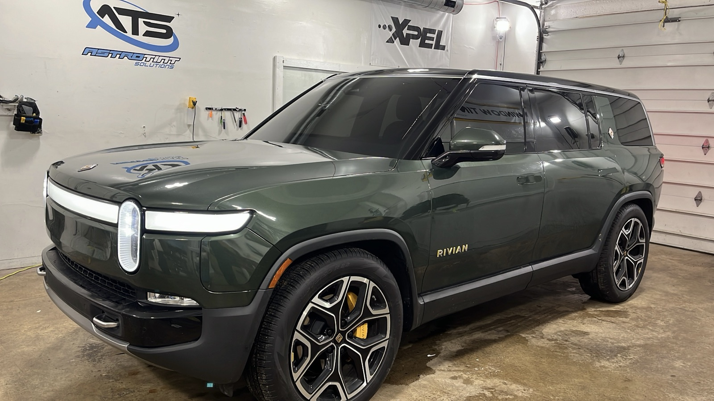

Rock-chip & scratch defense
A tough urethane layer absorbs impacts from gravel, road debris and daily wear, keeping chips and scratches off your actual paint.
Automotive · Self-healing PPF
Invisible, self-healing urethane film that shields your hood, bumper and high-impact areas from rock chips, scratches and road rash — so your paint stays flawless for years.
Virtually invisible · Self-healing film · Warrantied protection

Why paint protection film
PPF takes the hits your paint would otherwise take — quietly, and without changing how your car looks.
A tough urethane layer absorbs impacts from gravel, road debris and daily wear, keeping chips and scratches off your actual paint.
Light swirls and marks vanish with heat from the sun. The film is optically clear, so protection stays completely out of sight.
Factory paint that still looks new is worth more. PPF keeps your front end flawless — ideal for new, leased or repainted vehicles.

Coverage options
PPF FAQ
PPF is a clear, self-healing urethane film applied over your paint. It absorbs rock chips, scratches and road rash so your paint stays flawless. It's virtually invisible once installed.
The most common coverage is the high-impact front end — hood, front bumper, fenders and mirrors. You can also do full-vehicle wraps or high-wear areas like door edges and rocker panels. We'll recommend coverage that fits your driving and budget.
They do different jobs. PPF is a physical barrier against chips and scratches; a ceramic coating adds gloss, easier cleaning and chemical protection. Many owners pair them — PPF on the front end, ceramic over the rest.
Quality modern film resists yellowing and is backed by a warranty. We install premium, self-healing film so it stays clear and protective for years.
Ready when you are
Tell us your vehicle and the coverage you want. No-pressure pricing, usually the same day.